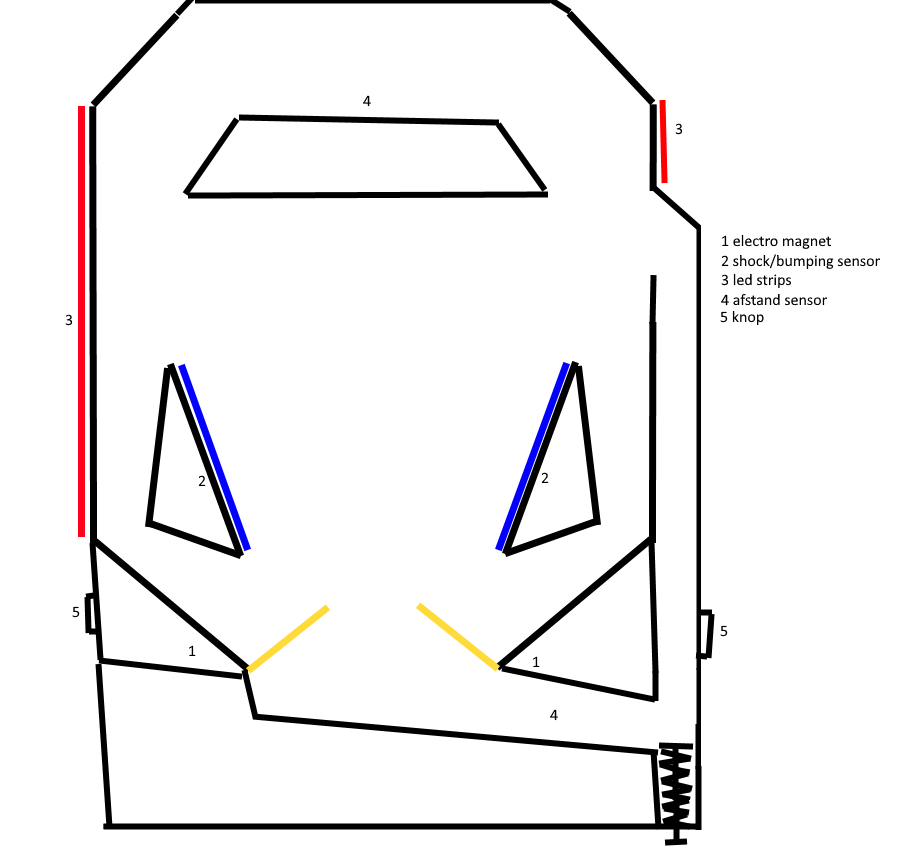
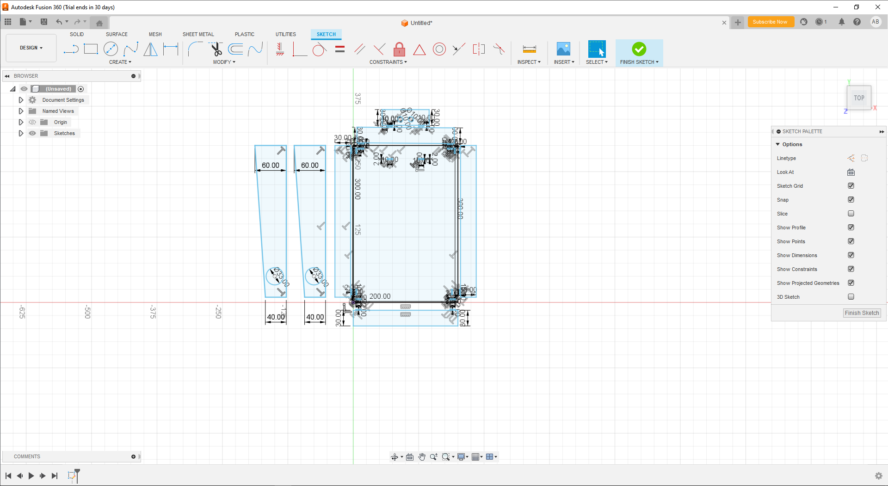

Fish Tank Sandbox

Introduction
I started this project in the summer of the first year at media college amsterdam to keep programming when not at school, the project was halted a couple of times mainly because of school, other projects or lack of interest. It underwent a lot of refactoring and a lot of things where made multiple times, it was the first project I was writing most of the code without help from the internet or other people.
Functional
The Tank
When the game starts you begin with one fish swimming around in the fish tank. This will always be a red fish. At the top left is a button called "spawn food" if the food is spawned the fish will swim to it and eat it. Every time the fish eats 5 pieces of food it grows. When 2 fish swim past each other one of them can lay an egg. If you don't give the fish any food he will DIE. Another button at the top left is "go to pond" when this button is pressed you will go to another screen with a fishing rod where you can catch other fish.
The Pond
The to buttons at the top left are "open bail" and "hook view". When open bail is pressed the hook will go down very fast. With this button you can reach the bottom of the pond very quickly. With the other button you can see where the hook is. When hook view is not enabled you can move the rod by dragging it with your mouse. If the hook moves too fast past the fish in the pond they get scared and will swim away. You can catch a fish by keeping the hook on one place and waiting until a fish bites the hook. If the fish is on your hook you'll need to move the hook very slowly otherwise the fish can get away. If you manage to reach the top the fish is catched and a screen with the statistics of the fish will show. In this screen you can give your fish a name. You also have the choice to sell your fish or keep it in your tank. Collect all the different kind of fish to beat the game.
Technical
The Tank
When the game starts a fish game object will be instantiated at a random position. He gets added to an instance of the fish class. If the spawn food button is pressed a bool gets enabled and when the left mouse button is pressed the food game object gets instantiated at the position of the mouse and gets added to the food list. All the behaviour of the fish runs in a function called FishBehaviour() exept for the egg laying part. This part runs in the Egging() function. In the FishBehaviour function the air bubbles get instantiated, the statistics of the fish are tracked, the sprite gets flipped depending on if the pos.x is bigger than his own x position. Every time the fish reaches the point he is swimming towards 1 value is subtracted from the hunger value. This function also makes the fish move to the food if it is close enough. When the fish is close enough to the food game object it gets destroyed and removed from the food list, the grow value increases by 1. Depending on the hunger value the movement speed gets changed, this is done in a switch statement.
The Pond
When you enter this scene the 2 buttons in the top left; open bail and hook view. If the open bail button is pressed
in the Scrolling() function the hook's transform moves down rapidly. the hook stops going down when it reaches y -80.
If the hook view button is pressed the camera's position is set to the y position of the hook and parented. It is also posible
to move the hook by using the scrollwheel. When the hook is close to a fish and the magnitude between its old position and its current
position is > 1.33f the fish will swim away and he loses 1 interest. But if you keep the hook still fish can get interested in it. Its interest
is is an int. By using Random.Range() the fish will bite the hook directly or will pass the hook and come back later. When the fish is interested
he will look at the hook and when the interest value is 3 or bigger a bool called isInterested is set to true and
the fish moves to the hook and he gets parented to the hook. After the fish gets parented to the hook the FishEscape()
function start, which checks if the hook's magnitude between the old and current position is > 1.33f the fish will get loose this
is done in the same way as how the fish swim away when the hook goes past them too fast. If the fish transform gets above y -1 the catched bool
gets set to true. Now this bool is set to true a UI element appears in which you can see the statistics of the fish, change his name and
sell or keep it. The rest is still in development.
snippets
//code from the fish tank scene
//instantiates the fish and adds him to the list:
to top
int numbermf = UnityEngine.Random.class="method">RandomRange(class="value">0,class="value">2);
GameObject spawnedfish = class="method">Instantiate(fish);
Fish fc = new Fish(new Vector3(UnityEngine.Random.Range-8, 8), UnityEngine.Random.Range(-4, 5), 0), spawnedfish,
randomname[UnityEngine.Random.Range(0, 5)], type.red, 1f, 4f, 20, 2f, airbubble;
fishes.Add(fc);
if (numbermf == 0)
{
fc.malefemale = mf.male;
malefish.Add(fc);
}
else
{
fc.malefemale = mf.female;
fishes.Add(fc);
}
//fish class (this is already changed because this looks REALY bad)
to top
public class Fish
{
public Vector3 pos;
public Vector3 previouspos;
public GameObject gameobject;
public bool passed = false;
public string name;
public int id;
public type type;
public mf malefemale;
public float speed;
public float originalspeed;
public float range;
public int hunger;
public bool alive = true;
public bool changespeed = true;
public int growstate = 0;
public string growstring;
public bool foodisntalive = true;
public GameObject airbubble;
public float breathe = 0.0f;
public float rate;
public List<Fish> fishmemory = new List<Fish>();
public List<int> amountfishpassed = new List<int>();
public bool cameviaegg;
public Fish(Vector3 _pos, GameObject _gameobject, string _name, type _type, float _speed, float _range, int _hunger, float _originalspeed, GameObject _airbubble)
{
pos = _pos;
gameobject = _gameobject;
name = _name;
type = _type;
speed = _speed;
originalspeed = _originalspeed;
range = _range;
hunger = _hunger;
airbubble = _airbubble;
}
}
//food gets instantiated
to top
if (Input.GetMouseButtonDown(0) && canvas.GetComponentInChildren<buttons>().click && !EventSystem.current.IsPointerOverGameObject())
{
spawnedfood = Instantiate(fishfood);
foodlist.Add(spawnedfood);
spawnedfood.transform.position = mouse.transform.position;
}
//the FishBehaviour() function
to top
public void FishBehaviour(List&Fish> fishlist)
{
foreach (Fish fish in fishlist.ToList())
{
if (fish.alive)
{
fish.rate = UnityEngine.Random.Range(1, 10);
if (Time.time > fish.breathe)
{
fish.breathe = Time.time + fish.rate;
GameObject Iairbubble = Instantiate(airbubble);
if (fish.pos.x > fish.gameobject.transform.position.x)
Iairbubble.transform.position = new Vector3(fish.gameobject.transform.position.x+fish.gameobject.transform.localScale.x*0.8f, fish.gameobject.transform.position.y);
else
Iairbubble.transform.position = new Vector3(fish.gameobject.transform.position.x-fish.gameobject.transform.localScale.x * 0.8f, fish.gameobject.transform.position.y);
allairbubbles.Add(Iairbubble);
}
}
if (fish.alive)
{
fish.gameobject.transform.position += (fish.pos - fish.gameobject.transform.position).normalized * Time.deltaTime * fish.speed;
if(fish.pos == fish.previouspos)
fish.pos = new Vector3(UnityEngine.Random.Range(-8, 8), UnityEngine.Random.Range(-4, 5), 0);
if (Vector3.Distance(fish.gameobject.transform.position, fish.pos) < 1f && fish.foodisntalive)
{
fish.pos = new Vector3(UnityEngine.Random.Range(-9, 9), UnityEngine.Random.Range(-4, 5), 0);
fish.hunger--;
fish.changespeed = true;
}
}
//more code
}
}
//how fish lay eggs
to top
public void Egging()
{
foreach (Fish m in malefish)
{
foreach (Fish f in femalefish)
{
float fishDistance = 999;
Fish closestFish = null;
if((f.gameobject.transform.position - m.gameobject.transform.position).magnitude < fishDistance)
{
fishDistance = (f.gameobject.transform.position - m.gameobject.transform.position).magnitude;
closestFish = f;
}
if (fishDistance < 0.6f && !m.passed)
{
if (!m.fishmemory.Contains(closestFish))
{
m.fishmemory.Add(closestFish);
m.amountfishpassed.Add(1);
m.passed = true;
}
else
{
for (int i = 0; i < m.fishmemory.Count; i++)
{
if (m.amountfishpassed[i] == 8)
{
GameObject Iegg = Instantiate(FishEgg);
Iegg.transform.position = m.fishmemory[i].gameobject.transform.position;
m.amountfishpassed[i] = 0;
}
else
{
m.amountfishpassed[i]++;
m.passed = true;
}
}
}
}
if (fishDistance > 2)
m.passed = false;
}
}
}
flips the sprite
to top
if (fish.pos.x < fish.gameobject.transform.position.x)
fish.gameobject.GetComponent<SpriteRenderer>().flipX = true;
if (fish.pos.x > fish.gameobject.transform.position.x)
fish.gameobject.GetComponent<SpriteRenderer>().flipX = false;
move to the closest food
to top
float closestFoodDistance = 999;
GameObject closestFood = null;
foreach (GameObject fo in GetComponent<food>().foodlist)
{
if ((fo.transform.position - fish.gameobject.transform.position).magnitude < closestFoodDistance && fish.hunger < 19)
{
closestFoodDistance = (fo.transform.position - fish.gameobject.transform.position).magnitude;
closestFood = fo;
}
if (closestFoodDistance < fish.range)
fish.pos = fo.transform.position;
if (closestFoodDistance < 1f && fish.alive && fish.hunger < 19)
{
fish.hunger += 3;
if (fish.gameobject.transform.localScale.y < 0.22f)
{
fish.growstate++;
if (fish.growstate == 5)
{
fish.gameobject.transform.localScale *= 1.1f;
fish.range += 0.1f;
fish.growstate = 0;
}
}
GameObject todelete = fo;
Destroy(todelete);
}
}
change movement speeds
to top
switch (fish.hunger)
{
case 20:
fish.speed = fish.originalspeed;
break;
case 15:
if (fish.changespeed)
fish.speed = fish.originalspeed * 0.8f;
fish.changespeed = false;
break;
case 10:
if (fish.changespeed)
fish.speed = fish.originalspeed * 0.6f;
fish.changespeed = false;
break;
case 5:
if (fish.changespeed)
fish.speed = fish.originalspeed * 0.4f;
fish.changespeed = false;
break;
case 2:
if (fish.changespeed)
fish.speed = fish.originalspeed * 0.2f;
fish.changespeed = false;
break;
case 0:
if (fish.alive)
{
fish.alive = false;
}
fish.gameobject.GetComponent<SpriteRenderer>().flipY = true;
if (fish.gameobject.transform.position.y > -4f)
fish.gameobject.transform.position += (new Vector3(fish.gameobject.transform.position.x, -4) - fish.gameobject.transform.position).normalized * Time.deltaTime * 1.5f;
break;
}
//code from the pond scene
//hook going down
to top
if (sinking && Distance < 99)
{
hook.transform.position += new Vector3(0, -40) * Time.deltaTime;
Distance = transform.position.y - hook.transform.position.y;
}
//parent camera to hook
to top
public void HookView()
{
if (!click2)
{
Camera.main.transform.position = new Vector3(0, hook.transform.position.y, Camera.main.transform.position.z);
button2.image.sprite = clickedbutton;
click2 = true;
Camera.main.transform.parent = hook.transform;
}
else
{
Camera.main.transform.position = new Vector3(0, 0, Camera.main.transform.position.z);
button2.image.sprite = unclickedbutton;
click2 = false;
Camera.main.transform.parent = null;
}
}
//move the hook up and down using the scrollwheel
to top
void Scrolling()
{
List<WildFish> wfishes = GameObject.Find("thepond").GetComponent<WildFishSpawn>().wildfishes;
if (Input.GetAxis("Mouse ScrollWheel") < 0 && Distance < 100 && !sinking)
{
hook.transform.position += new Vector3(0, -80) * Time.deltaTime;
Distance = transform.position.y - hook.transform.position.y;
}
else if(Input.GetAxis("Mouse ScrollWheel") > 0 && Distance > 4)
{
hook.transform.position += new Vector3(0, 80) * Time.deltaTime;
Distance = transform.position.y - hook.transform.position.y;
}
//more code
}
//fish get scared when the hook is moving too fast
to top
if ((fish.gameobject.transform.position - hook.transform.position).magnitude < 4)
{
if ((originalhookpos - hook.transform.position).magnitude > 1.33f && !fish.gone)
{
fish.gone = true;
fish.pos = new Vector3(-fish.pos.x, fish.pos.y);
fish.speed = fish.originalspeed * 4.5f;
}
}
//how fish get interested in the hook
to top
if ((closestFish.gameobject.transform.position - hook.transform.position).magnitude < 1.5f && !closestFish.gone && !hooked)
{
if (closestFish.isinterested)
{
closestFish.interest += Random.Range(1, 4);
closestFish.isinterested = false;
}
Vector2 direction = hook.transform.position - closestFish.gameobject.transform.position;
if (closestFish.gameobject.transform.position.x > hook.transform.position.x)
{
fish.gameobject.transform.right = direction;
fish.gameobject.GetComponent<SpriteRenderer>().flipX = false;
fish.gameobject.GetComponent<SpriteRenderer>().flipY = true;
}
else if (closestFish.gameobject.transform.position.x < hook.transform.position.x)
{
fish.gameobject.transform.right = -direction;
fish.gameobject.GetComponent<SpriteRenderer>().flipX = true;
fish.gameobject.GetComponent<SpriteRenderer>().flipY = false;
}
}
how the fish bites the hook
to top
if (closestFish.interest > 3 && !hooked)
{
closestFish.pos = hook.transform.position;
if ((closestFish.gameobject.transform.position - closestFish.pos).magnitude < 0.5f)
{
hf = closestFish;
hf.bite = true;
hooked = true;
hf.gameobject.GetComponent<SpriteRenderer>().flipY = false;
hf.gameobject.GetComponent<SpriteRenderer>().flipX = false;
hook.transform.position = closestFish.gameobject.transform.position;
hf.gameobject.transform.SetParent(hook.transform, true);
hf.gameobject.transform.Rotate(new Vector3(0, 0, 0));
}
}
//UI popup when the fish is catched
to top
if (catched)
{
fishStat.gameObject.SetActive(true);
Transform fishname = fishStat.transform.GetChild(1);
Transform fishtype = fishStat.transform.GetChild(2);
Transform sex = fishStat.transform.GetChild(3);
Transform input = fishStat.transform.GetChild(4);
fishtype.GetComponent<Text>().text = "Type " + hf.fishtype.ToString();
sex.GetComponent<Text>().text = "Sex " + hf.malefemale.ToString();
if (input.GetComponent<Text>().text.Length > 0)
catchedFish.name = input.GetComponent<Text>().text;
catchedFish.type = hf.fishtype;
catchedFish.malefemale = hf.malefemale;
hf = null;
catched = false;
}
Ant Simulation
Introduction
I started this project because I saw couple of videos of ant simulations I like to see their behaviour.
Functional
Ants wander around on the screen, when the ant has found food, he will walk back the same way he came Food will spawn as bugs that die and fall on the ground. A counter on the screen keeps track of all the food collected and how much ants there are currently.
Technical
When the game starts a for loop starts which instantiates the ants. The ant gameObjects are added to an instance of the Ant class. Every ant gets added to a list called antList. A foreach loop runs in the Update function with a state machine that controls the ants. There are 2 states; Wandering and Collecting. If the ant is in the wandering state he will pick a random position in a radius of 1.5, when the ant get to this position he will pick a new random position and his current position gets saved in a list This gets repeated until he is close enough to a bug. When the ant is close to a bug he will collect food from the bug, this can be done 100 times before the bug gets destroyed. If the ant has food his state changes to the collecting state. In this state he will go back to the ant hill following the positions he added to the list on his way to the food. When he arives at the ant hill his state changes back to wandering.
snippets
//ant class
to top
public class Ant
{
public List<Vector3> pathToFood = new List<Vector3>();
public List<Vector3> pathFromHome = new List<Vector3>();
public GameObject antGameObject;
public bool getFood;
public bool hasFood;
public bool atDestination = true;
public States state;
public Vector3 destination = new Vector3(0,0,0);
public float speed = 0.5f;
public float radius = 1.5f;
public int lengt
public Ant(GameObject _antGameObject)
{
antGameObject = _antGameObject;
}
public Vector3 position => antGameObject.transform.position;
}
//ant movement
to top
foreach(Ant ant in antList)
{
Vector2 direction = ant.destination - ant.position;
ant.antGameObject.transform.up = -direction;
//move
ant.antGameObject.transform.position += (ant.destination - ant.position).normalized * ant.speed * Time.deltaTime;
switch (ant.state)
//rest of the code
}
//ant state machine
to top
switch (ant.state)
{
case States.Wandering:
ant.antGameObject.GetComponent<SpriteRenderer>().sprite = antDefaultSprite;
//searching for food
float closestFood = 99;
Moth closestFoodGameObject = null;
foreach (Moth moth in mothList)
{
if ((moth.position - ant.position).magnitude < closestFood && moth.isDead)
{
closestFood = (moth.position - ant.position).magnitude;
closestFoodGameObject = moth;
}
if (closestFood < 0.5f)
ant.destination = closestFoodGameObject.position;
if (closestFood < 0.2f)
{
ant.hasFood = true;
ant.pathToFood.Add(ant.position);
ant.length = ant.pathFromHome.Count;//the path he walked so far
if (!ant.getFood)
{
closestFoodGameObject.health--;
ant.getFood = true;
}
ant.state = States.Collecting;
}
}
break;
case States.Collecting:
ant.atDestination = true;
ant.antGameObject.GetComponent<SpriteRenderer>().sprite = antCarryFood;
if ((transform.position - ant.position).magnitude < 0.05f)
{
ant.getFood = false;
ant.hasFood = false;
totalFood++;
ant.destination = transform.position;
ant.pathFromHome.Clear();
ant.state = States.Wandering;
}
break;
}
//save position in list
to top
if ((ant.position - ant.destination).magnitude < 0.05f && !ant.hasFood)
{
ant.destination = new Vector3(Random.Range(ant.position.x - ant.radius, ant.position.x + ant.radius), Random.Range(ant.position.y
- ant.radius, ant.position.y + ant.radius));
ant.pathFromHome.Add(ant.position);
}
//collect food
to top
if (closestFood < 0.2f)
{
ant.hasFood = true;
ant.pathToFood.Add(ant.position);
ant.length = ant.pathFromHome.Count;//the path he walked so far
if (!ant.getFood)
{
closestFoodGameObject.health--;
ant.getFood = true;
}
ant.state = States.Collecting;
}
//follow path
to top
if ((ant.destination - ant.position).magnitude < 0.05f && ant.atDestination)
{
ant.pathToFood.Add(ant.position);
if (ant.length > 0)
{
ant.length--;
ant.destination = ant.pathFromHome[ant.length];
}
ant.atDestination = false;
}
Tower Defense
Introduction
This was the first school project of the second year at media college amsterdam.
Functional
Menu
When the game starts you have a menu, you can start the game or exit the game. You can get to the menu if you press Escape.
Main Game
On the right side of the screen there is a menu where you can select different towers and buy upgrades for your character. The upgrades are a mini map and the ability to run faster. When a tower is selected you can hover with the mouse over the screen, it indicates if you can place a tower or not. When the game starts a timer starts counting down, when it reaches 0 a wave starts or you can start a wave by clicking the start wave button in the menu. When the wave starts a group of 8 enemies will spawn at the begin of the path which is top left. If there are any towers placed on the map and the wave has started the towers will target the closest enemy. 3 different types of enemies spawn at random; the red enemy is the weakest it does the least damage and has the least HP, the green enemy does more damage and has more HP and the blue enemy is the strongest it does the most damage and has the most HP. If the enemies reach the base at the end of the path they do damage to it. When the health reaches 0 it's game over and a death screen appears.
Technical
Menu
The menu contains a button to start the game and to exit the game. The start button goes to the main scene and the exit button quits the game.
Main Game
When the game starts a timer will count down if it reaches 0 a wave of 8 enemies starts and the enemies get added to a list. The mouse will check if there is a tower or a path tile under it. When the game starts a circle sprite gets instantiated that turns red if the mouse is over a path tile or another tower this is done by adding all the towers to a list and calculating the distance between them, or if the tile the mouse is currently over is not a path tile. The sprite turns green if the space under it is clear. When you left click while you have selected a tower from the menu a tower game object gets instantiated and gets added to an instance of the Tower class. when the tower is instantiated it is added to a list. When the enemies close enough to the towers a bullet gets instantiated and moves infront of the enemy. If the bullet gets close to an enemy health gets deducted from the enemy. The enemy moves to a list of empty game objects if it gets close to the first game object in the list the first one in the list gets removed from it and the enemy goes to the next. When the enemy reaches the last point in the list it does damage to the base, the enemy gets destroyed and health gets deducted from the player.
Snippets
//indicator if tower can be placed
if (GameObject.Find("Canvas").GetComponent<buttonclicked>().clicktowerselect)
{
if (uitowerspawned == null)
uitowerspawned = Instantiate(uitower);
if (uitowerspawned != null)
uitowerspawned.transform.position = mouse.transform.position;
if (closestdist < 1 || tilemap.GetTile(tilemap.WorldToCell(mouse.transform.position)) == pathtile)
{
uitowerspawned.GetComponent<SpriteRenderer>().color = new Color(1, 0, 0, 0.25f);
canplace = false;
}
else
{
uitowerspawned.GetComponent<SpriteRenderer>().color = new Color(0, 1, 0, 0.25f);
canplace = true;
}
}
//predict enemy position
t.bulletdict.Add(ibullet, closestenemy.transform.position
+ ((GameObject.Find("spawner").GetComponent<spawn>().ec.points[0].transform.position
- closestenemy.transform.position).normalized * Mathf.Pow(closestedist, 1.25f) / 5f) - t.position);
//moves it infront of the enemy
foreach (KeyValuePair<GameObject, Vector3> b in t.bulletdict)
{
b.Key.transform.position += b.Value * Time.deltaTime * bulletspeed;
}
//Tower class
public class Tower
{
public string towername;
public float bulletspeed;
public float cooldown;
public float lastfire = 0f;
public float damage;
public float range;
public int cost;
public GameObject towerGameObject;
public Dictionary<GameObject, Vector3> bulletdict = new Dictionary<GameObject, Vector3>();
public Vector3 position => towerGameObject.transform.position;
}
//wave countdown
if (System.Convert.ToInt32(timertext.text) > 0)
{
timertext.text = ((int)(300 - (Time.time - lasttime))).ToString();
if (System.Convert.ToInt32(timertext.text) == 0 && spawning)
{
StartCoroutine(Spawning());
spawning = false;
timertext.text = 300.ToString();
}
else
{
spawning = false;
}
}
//enemy waves
public IEnumerator Spawning()
{
spawning = false;
for (int i = 0; i < 9; i++)
{
//lastspawn = Time.time + cooldown;
spawnedenemy = Instantiate(basicenemy, transform.position, transform.rotation);
List<Enemy> randomenemy = new List<Enemy>() { new Enemy() { enemyGameObject = spawnedenemy, enemyname = "basicenemy", hp = 0.5f, speed = 100f, damage = 1 },
new Enemy() { enemyGameObject = spawnedenemy, enemyname = "strongerenemy", hp = 1f, speed = 100f, damage = 2 },
new Enemy() { enemyGameObject = spawnedenemy, enemyname = "strongestenemy", hp = 2f, speed = 100f, damage = 4 } };
ec = randomenemy[Random.Range(0, 3)];
enemies.Add(ec);
for (int ii = 0; ii < GameObject.Find("points").transform.childCount; ii++)
ec.points.Add(GameObject.Find("points").transform.GetChild(ii));
enemyIndexes.Add(1);
if (ec.enemyname == "basicenemy")
ec.enemyGameObject.GetComponent<SpriteRenderer>().color = Color.red;
if (ec.enemyname == "strongerenemy")
ec.enemyGameObject.GetComponent<SpriteRenderer>().color = Color.green;
if (ec.enemyname == "strongestenemy")
ec.enemyGameObject.GetComponent<SpriteRenderer>().color = Color.blue;
yield return new WaitForSeconds(0.7f);
};
}
//enemies added to the list
List<Enemy> randomenemy = new List<Enemy>() { new Enemy() { enemyGameObject = spawnedenemy, enemyname = "basicenemy", hp = 0.5f, speed = 100f, damage = 1 },
new Enemy() { enemyGameObject = spawnedenemy, enemyname = "strongerenemy", hp = 1f, speed = 100f, damage = 2 },
new Enemy() { enemyGameObject = spawnedenemy, enemyname = "strongestenemy", hp = 2f, speed = 100f, damage = 4 } };
ec = randomenemy[Random.Range(0, 3)];
enemies.Add(ec);
//place tower
if (Input.GetMouseButtonDown(0) && uitowerspawned.GetComponent<SpriteRenderer>().color != new Color(0, 0, 0, 0f)
&& tilemap.GetTile(tilemap.WorldToCell(mouse.transform.position)) != pathtile)
{
if (GameObject.Find("Canvas").GetComponent<buttonclicked>().click1)
TowerButton(1);
if (GameObject.Find("Canvas").GetComponent<buttonclicked>().click2)
TowerButton(2);
if (GameObject.Find("Canvas").GetComponent<buttonclicked>().click3)
TowerButton(3);
if (GameObject.Find("Canvas").GetComponent<buttonclicked>().click4)
TowerButton(4);
if (GameObject.Find("Canvas").GetComponent<buttonclicked>().click5)
TowerButton(5);
if (GameObject.Find("Canvas").GetComponent<buttonclicked>().click6)
TowerButton(6);
if (GameObject.Find("Canvas").GetComponent<buttonclicked>().click7)
TowerButton(7);
if (GameObject.Find("Canvas").GetComponent<buttonclicked>().click8)
TowerButton(8);
}
//enemy gets damaged
foreach (KeyValuePair<GameObject, Vector3> bt in t.bulletdict)
{
foreach (Enemy e in enemies.ToList())
{
if ((e.enemyGameObject.transform.position - bt.Key.transform.position).magnitude < 1f)
{
e.hp -= 0.5f;
if (e.hp <= 0)
{
enemies.Remove(e);
Destroy(e.enemyGameObject);
GameObject.Find("player").GetComponent<player>().points += 20;
}
}
}
}
//enemies follow the path
if (se.points.Count > 0)
{
se.enemyGameObject.transform.position += (se.points[0].transform.position - se.enemyGameObject.transform.position).normalized * Time.deltaTime * 10;
if (Vector3.Distance(se.enemyGameObject.transform.position, se.points[0].transform.position) < 0.5f)
se.points.RemoveAt(0);
}
//damage the base
if (Vector3.Distance(se.enemyGameObject.transform.position, GameObject.Find("player").GetComponent<player>().thebase.transform.position) < 2)
{
deadenemy = se.enemyGameObject;
if (GameObject.Find("player").GetComponent<player>().health > 0f)
{
GameObject.Find("player").GetComponent<player>().health -= se.damage;
GameObject.Find("player").GetComponent<player>().hp.value = GameObject.Find("player").GetComponent<player>().health;
}
deadenemy.transform.position = new Vector3(20, 20, 0);
enemies.Remove(se); //als de enemies de base raken worden ze gedestroyed
Destroy(deadenemy);
Destroy(GameObject.Find("enemy(Clone)").GetComponent<enemyhp>().iehp);
}
Input Output Project
Introduction
My Idea for this project was to make a pinball machine using the arduino together with an Unity project to keep the scores. The pinball machine will be made out of cardboard and the sensors are attached to it.
Functional
Eind verslag keuze onderdeel Input Output.
link to trello
My idea for the Input Output school project was a pinball machine where the score was kept in Unity.
The input and output sensors originally chosen for this project where: a shock sensor, an electro magnet, an ultrasonic distance sensor, LEDs and buttons.
After that I made a design of how I wanted the pinball machine, where to place the sensors and from what kind of material the machine would be made.
The material I chose was some thin kind of wood. The idea for the flippers was to 3d print them and put some metal in it so the magnets could pull them.
And a spring that ensures the flipper would go back up after the electromagnet turns off.
in this design you can see how it should be put together:

When everything was realised I started working on the project. During the making of this project we got lessons in how to program with the arduino,
read sensors and connect it to Unity. I used the arduino IDE to write the code for the arduino and the sensors,
I used fusion360 to make the model for the frame for the pinball machine and used System.IO to read the port the arduino was connected to.
When I began with the shock sensor I discovered the way I wanted to use the shock sensor was not possible because of the way the pinball machine was constructed.
After that I tried using a touch sensor but again I discovered it didn't work because the way the touch sensor worked,
it only could interact with your finger.
In this picture you can see how the temporary design of the machine would look:

I used a pull down resistor to ensure that the button only returned 1 when it was pressed.
That way electricity only goes round when the button is pressed else it goes to the ground trough another route.
As soon as the variable of the button is read as 1 trough digialRead() the function digitalWrite() gets used on the pin where the electro magnet gets electricity from.
When the button gets released 0 gets returned and the electromagnet turns off. this way the flippers should move.
To read the points and if the ball falls into the gutter. First I just used variables to calculate the distance and used the direct output.
But I got advised to use a library to see the distance of the distance sensor. It uses a class called NewPing with the variables which pin the current comes from,
which pin is the ground and what is the maximum distance to be measured.
A lot of testing was done during the making of this project, if the sensors would work like expected. At the end when the physical part (the pinball machine itself) was made I ran into a few problems,
one of them was almost nothing left of the material I wanted to make the machine out of, so it partially was made out of a 3d printed material.
When everything was assembled I discovered the electromagnets where not strong enough to attract the flippers trough 2 layers of plastic.
Snippets
public class ArduinoSerialCommunication : MonoBehaviour
{
SerialPort Serial;
public TMP_Text ScoreText;
public TMP_Text BallsText;
public Sprite[] frames = new Sprite[4];
public float framerate = 0.1f;
float nextframe = 0.0f;
public Image background;
int length = 0;
int highscore;
void Start()
{
Serial = new SerialPort();
Serial.PortName = "COM5";
Serial.Parity = Parity.None;
Serial.DataBits = 8;
Serial.StopBits = StopBits.One;
Serial.Open();
}
void Update()
{
if(Serial.BytesToRead > 0)
{
string[] info = Serial.ReadLine().Split(' ');
string ballCount = Serial.ReadLine();
ScoreText.text = info[0];
BallsText.text = info[1];
if (int.Parse(info[1]) < 0)
SceneManager.LoadScene(1);
Debug.Log(info[1]);
PlayerPrefs.SetInt("score", Int32.Parse(info[0]));
if (Int32.Parse(info[0]) > PlayerPrefs.GetInt("highscore", 0))
PlayerPrefs.SetInt("highscore", Int32.Parse(info[0]));
}
if (Time.time > nextframe)
{
if (length == 4)
length = 0;
background.sprite = frames[length];
length++;
nextframe = Time.time + framerate;
}
}
}
//arduino code
void loop() {
// put your main code here, to run repeatedly:
int k1 = digitalRead(2);
int k2 = digitalRead(3);
//get score
duration = sonar.ping();
distance = (duration/2)*0.0343;
//Serial.println(score);
if(distance < 3.00){
getScore = true;
}
else if(distance > 3.00){
getScore = false;
}
if(getScore){
score += 10;
}
}
//score count
//ball count
durationBallS = sonarBall.ping();
distanceBallS = (durationBallS/2)*0.0343;
int previousBallAmount = ballsAmount;
if(distanceBallS > 3.00){
getBallAmount = true;
}
if(getBallAmount){
ballsAmount--;
getBallAmount = false;
delay(2000);
}
if(ballsAmount == 0){
gameOver = true;
}
Serial.println(String(score)+" "+String(ballsAmount));
if(k2 > 0){
Serial.println(Lbumper);
digitalWrite(6, HIGH);
}
else if(k2 <= 0)
digitalWrite(6, LOW);
if(k1 > 0){
Serial.println(Lbumper);
digitalWrite(7, HIGH);
}
else if(k1 <= 0)
digitalWrite(7, LOW);
After The Fall Vectical Slice

Grabbable Object Interaction
Pickup Objects
Functional
When the player is close to an object an indicator appears around the object, it gives a small description of the item.
When the middle finger button is pressed the object moves quickly to the hand.
You can pickup this item:

You are close enough to pick up this item:

You can pick up an item in the vertical slice:

Technical
Find Closest Object Near Raycast
A raycast is casted from each hand and loops trough all the objects found with a grab component in the sphere raycast at the end of the raycast.
It disables the physics of the closest object.
Find Closest Object Within Sphere Trace
The closest object is found and saved in the variable ClosestFoundObject
Move Object
When the closest object is found its the distance between its position and the position of the hand gets calculated and normlized.
After that the object gets pulled to the hand.
If the object is close enough it gets grabbed.
Grab Object
The position of the object is snapped to the position of the hand and the variables
HeldComponent Left/Right, PullingObject Left/Right and bIsPulling Left/Right are set null.
Grabbable Object Trace
At the transform of the closest object an outline is spawned which is destroyed when the raycast is pointed at another object or at nothing.
Flowchart
A simplified flowchart of how the system works (hover over it to enlarge):